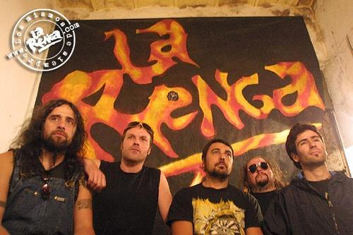

La noche de año nuevo de 1988, cuatro amigos (Chizzo en voz y guitarra, Locura en Guitarra, Tete al bajo y Tanque en batería) se juntaron a tocar en el barrio de Mataderos. Esa noche fue la génesis de lo que llamarían, tiempo después, La Renga. Durante 1988 llegaron los primeros recitales: Clubs Larrazabal, Teatros del Plata, Galpones del Sur y en distintos clubes barriales, fueron instalados los primeros escenarios de La Renga. Al año siguiente graban lo que luego, dos años mas tarde, se distribuiría como "Esquivando Charcos", la primera producción totalmente independiente que cuenta con 9 temas de los cuales 7 fueron grabados en estudios y dos en vivo en sala de ensayos. Por problemas personales, Locura Dilelio decide separarse de la banda y comienza la búsqueda del reemplazante, pero como no logran encontrarlo Chizzo se queda como primera guitarra. Posteriormente, se sumaron Gabriel Sanchez (Saxo y trompeta) y Manuel Varela (Saxo, armónica y guitarra rítmica). En 1993 y nuevamente de manera totalmente independiente se edita "Adonde me lleva la vida", pero la necesidad de cumplir con la demanda del público hace que la banda aproveche la ventaja de firmar con una discográfica, con la postura firme de no perder en absoluto la independencia artística, llegando a un acuerdo con Polygram, quien sólo se hace cargo de la fabricación y distribución de los discos. Con el paso del tiempo, este grupo consiguió algo fuera de lo común en el negocio discográfico: logró imponerle a la compañía sus propias reglas de juego, elevando el porcentaje de regalías del clásico 3% a alrededor del 20%. En 1995 se edita "Bailando en una pata", el cual contiene las versiones en vivo de temas de "Esquivando charcos", grabadas en el estadio de Obras el año anterior, y acompañados por la canción que da nombre al álbum, más una versión de Born To Be Wild del grupo norteamericano Steppenwolf. Durante el 1995 y 1996, La Renga llevó a cabo varias presentaciones por Capital y Gran Buenos Aires, muchas de ellas a beneficio. En diversas oportunidades se negaron a tocar en recitales gratuitos organizados por el Gobierno, y también se rechazaron propuestas de sponsors, sobretodo relacionados con las bebidas alcohólicas. A fines de 1996 y bajo la producción artística de Ricardo Mollo sale a la calle "Despedazado por mil partes", el cual fue presentado en Capital con cuatro presentaciones en el estadio de Obras. Esta nueva placa tuvo una gran aceptación por parte del público rengo y atrajo una gran cantidad de nuevo público, que le abrió las puertas hacia exterior, y fue así como en 1997 se produce la primera gira. En ella, La Renga giro por todo el interior de la Argentina, y visitó por primera vez Uruguay y España. Al finalizar el tour, la banda hizo una pausa en los recitales para comenzar a producir su quinto trabajo discográfico, "La Renga" 1998, el cual en menos de una semana se convirtió en platino como prueba de la expectativa generada. El 19 de mayo del 2001, filmaron la película “Insoportablemente vivo” junto al director Diego Stokelj, y de ahí surgió el álbum doble homónimo, y al año siguiente lograron el máximo pico en su carrera al presentarse en River ante más de 70.000 personas. Junto con la entrada al show se vendía un EP con tres temas, llamado "Documento único". "Detonador de sueños" fue el trabajo que lanzaron en el 2003 y que en noviembre de ese año presentaron en vivo en el estadio Chateau Carreras de la ciudad de Córdoba, y luego presentaron el disco otra vez en la cancha de River con entradas agotadas. A finales de 2006 el trabajo de La Renga es doble. Primero, lanzando el DVD "En el ojo del huracán" que plasma las imágenes y la música producto del concierto celebrado por la banda el 4 de diciembre de 2004 en el estadio de Huracán. 16 cámaras distribuidas por todo el predio registraron un show de características únicas, no solamente en lo musical, sino también por el armado del escenario: en el centro del campo. La segunda novedad de finales de 2006 es el lanzamiento de su próximo disco "Truenotierra", álbum doble con 17 canciones. El primer CD incluye doce canciones, entre las que se encuentran “El monstruo que crece”, “Almohada de piedra”, “Ruta 40”, “Oscuro diamante” (corte de difusión), “Entre la niebla”, “Cuadrado obviado”, etc. El segundo disco contiene cinco temas instrumentales llamados “Alunizando al unísono”, “Sustancia entre las plantas”, “Truenotierra”, “Anaximandro” y “Neuronas abrazadas”. Tiempo después, hubo rumores que indicaban que la banda se separaría, pero todo quedo desmentido cuando Chizzo declaró que estaban preparando un nuevo disco que saldría en algún momento de 2010. Su título es "Algún rayo", y la novedad de este lanzamiento es el denominado formato "Entradadisco", el cual con la compra del CD, se incluye un ticket para presenciar uno de los 12 shows de presentación del álbum, realizados en distintas ciudades de Argentina, Uruguay y Chile. "Algún rayo" contiene 12 nuevas canciones, grabadas en "La Renga Estudios", entre Diciembre 2009 y Septiembre de 2010.
